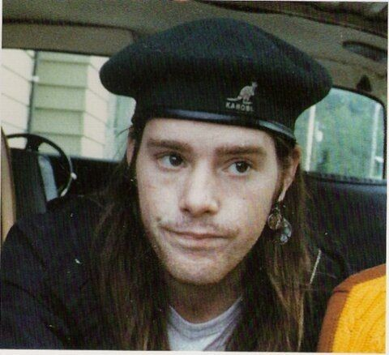

Conheça os integrantes que fizeram história na música grunge.
Introdução:
O Nirvana foi formado por um grupo de talentosos músicos que revolucionaram o cenário musical dos anos 90.Conheça mais sobre cada integrante e suas contribuições para a banda.
Kurt Cobain(1967-1994)
.jpeg)
Função na Banda:Vocalista e guitarrista.
Biografia:
Kurt Cobain cresceu em uma pequena cidade do estado de Washington e desde cedo demonstrou interesse por música e arte. Após o divórcio de seus pais, quando ele tinha nove anos, Kurt enfrentou dificuldades emocionais e passou a se expressar principalmente através da música e do desenho. Durante a adolescência, ele encontrou refúgio no punk rock, especialmente nas influências de bandas como The Melvins,The Pixies e The Stooges, que mais tarde moldariam o som característico do Nirvana. Em 1987,Cobain fundou o Nirvana ao lado de Krist Novoselic. A banda rapidamente ganhou atenção no cenário alternativo, mas foi com o lançamento do álbum Nevermind (1991) que alcançaram fama mundial. A faixa "Smells Like Teen Spirit" tornou-se um hino da geração dos anos 90 e consolidou Kurt como o porta-voz do movimento grunge. Apesar do sucesso, Kurt sempre se sentiu desconfortável com a fama, frequentemente criticando a indústria musical e a forma como sua imagem era explorada. Ele lutou contra problemas de saúde, dores crônicas e o vício em heroína, o que afetou sua saúde física e mental. Em 1992, Kurt casou-se com Courtney Love, vocalista da banda Hole, e juntos tiveram uma filha, Frances Bean Cobain. O relacionamento deles foi amplamente coberto pela mídia, muitas vezes de maneira sensacionalista. Em 5 de abril de 1994, Kurt Cobain foi encontrado morto em sua casa em Seattle, em um caso amplamente considerado suicídio, embora existam teorias conspiratórias que questionam as circunstâncias. Sua morte marcou o fim trágico de uma das vozes mais influentes da história do rock
Casamento do Kurt:
Frances Bean e Kurt:

Curiosidades:
Sua guitarra favorita era uma Fender Jaguar modificada.
Foi casado com Courtney Love, com quem teve uma filha,Frances Bean Cobain.
Escreveu a icônica "Smelss Like Teen Spirit", que definiu o movimento grunge.
Krist Novoselic
Biografia:Krist Anthony Novoselic nasceu em Compton, Califórnia, em uma familia de imigrantes croatas.Ele se mudou para Aberdeen, Washington, durante a adolescência, onde conheceu Kurt Cobain.Sua paixão pela música o levou a formar o Nirvana em 1987, ao lado de Cobain.O baixo de Krist se tornou a espinha dorsal das músicas da banda, complementando perfeitamente a intensidade de Cobain e Grohl.Após o fim do Nirvana, Krist explorou vários projetos musicais, incluindo a banda Sweet 75, e se tornou um defensor de causas politícas e sociais, especialmente relacionadas á forma eleitoral nos EUA.

Data de nascimento:16 de maio de 1965
Instrumento:Baixo elétrico
Contribuição principal:Confudador da banda e coautor em várias músicas.Sua habilidade única e presença de palco eram parte essencial do som do Nirvana.
Curiosidade:Após o fim do Nirvana,Krist continuou a trabalhar com música, além de se envolver em causas políticas e socias.Ele também tocou acordeão em alguns projetos musicais.
Dave Grohl
Biografia:David Eric Grohl nasceu em Warren, Ohio, e começou a tocar guitarra aos 10 anos de idade.Aos 17, tornou-se baterista da banda punk Scream,onde ganhou notoriedade.Em 1990, foi convidado para se juntar ao Nirvana, substituido o baterista anterior.Com a sua chegada, o som da banda ganhou ainda mais peso e definição, contribuindo significativamente para o sucesso estrondoso de Nevermid.

Data de nascimento:14 de janeiro de 1969
Instrumento:Bateria(no Nirvana), além de vocal e guitarra em sua banda posterior, Foo Fighters.
Contribuição principal:Seu estilo energético de tocar bateria adicionou peso e ritmo icônico ás músicas do Nirvana.
Curiosidade:Após a morte de Kurt Cobain,Dave fundou o Foo Fighters e se tornou uma das figuras mais influentes do rock moderno.
Créditos e contribuições
Embora Kurt Cobain,Krist Novoselic e Dave Grohl sejam amplamente reconhecidos como principais integrantes do Nirvana, a banda contou com a colaboração de outros músicos que desempenharam papéis importantes em momentos específicos:
Pat Smear:Guitarrista de apoio durante as turnês da era In Utero e na gravação do famoso álbum ao vivo MTV Unplugged in New York.Antes do Nirvana,Pat já era conhecido por sua participação na banda punk Germs.

Chad Channing:Baterista do Nirvana antes da entrada de Dave Grohl, Chad tocou no álbum Bleach e contribuiu para moldar o som inicial da banda.
Dale Crover:Baterista da banda Melvins, ele gravou algumas das primeiras demos do Nirvana em 1988.

Dan Peters:Baterista da banda Mudhoney, contribuiu brevemente, tocando na música "Sliver".

Essas colaborações ajudaram a moldar diferentes fases e sonoridades do Nirvana, deixando marcas importantes na trajetória da banda.